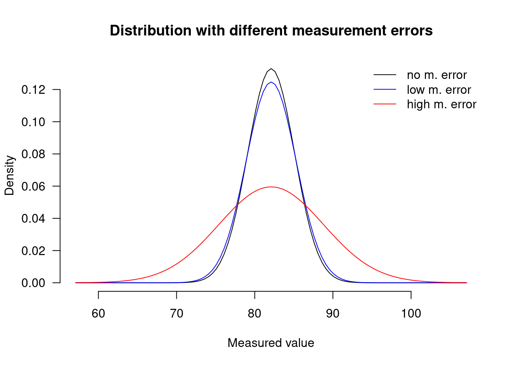
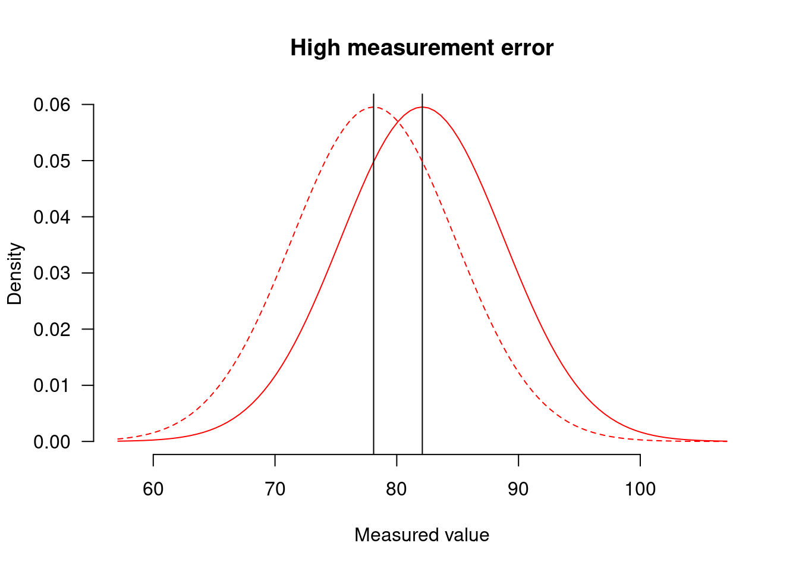
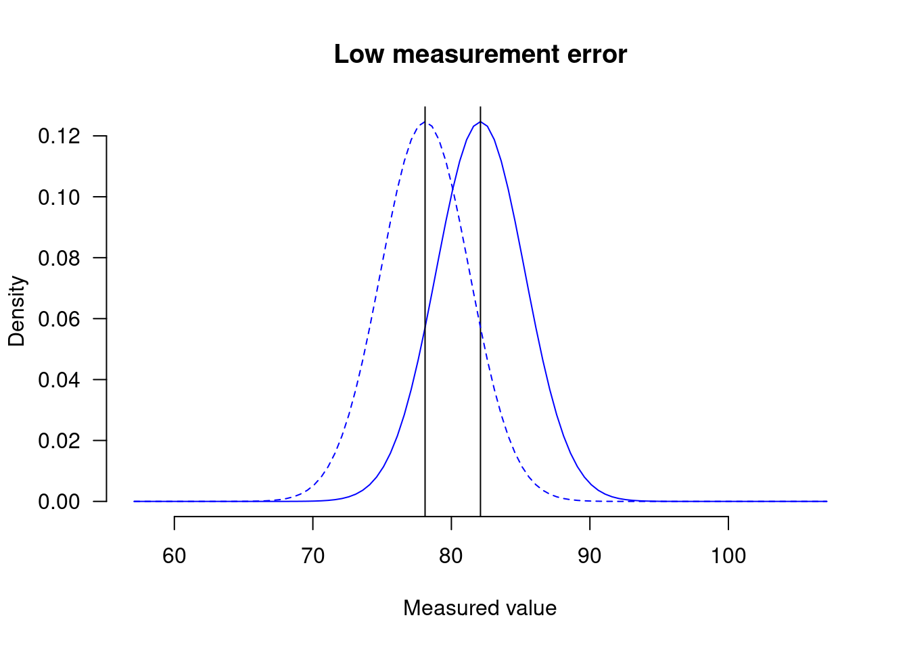

More on why I don’t like standardised effect sizes
A couple of weeks ago, I outlined four reasons why I don’t like standardised effect sizes such as Cohen’s d or Pearson’s r and prefer raw effect sizes instead. In this post, I develop my argument a bit further and argue that reliance on standardised effect sizes can hinder comparisons between studies and that it may have a perverse effect on discussions related to statistical power.
A fictitious example
Let’s say two research teams want to investigate the effect of testosterone treatment in bats on the number of twists and turns the bats make per minute when they’re out hunting. Both teams take a random sample of 200 bats and randomly assign 100 of them to the testosterne treatment and 100 to the no-treatment group. The testosterone treatment is identical for both research teams. After treatment, the bats are observed hunting and the number of turns they make is tallied. Both teams adhere to the same definition of what a turn is.
The first team notes that the testosterone treatment seemed to have led to an increase in the number of turns. In standardised effect sizes, the Cohen’s d (i.e. difference between the group means divided by the pooled standard deviation) of their treatment is 0.60 (95% CI: [0.30; 0.89]). The second research team similarly notes an testosterone-induced increase, but their Cohen’s d is more than twice as high: 1.26 (95% CI: [0.93; 1.60]). Even before the results get published, chiropterologists (yes, I had to look that up) are already vigorously debating the results and some are drafting up grant proposals to uncover what may lie behind this difference.
Such enthusiasm would be premature, however. In actual fact, both research teams found the exact same effect. The raw testosterone-induced increase in number of twists and turns per minute was 4 in both the first experiment (95% CI: [2.1; 5.9]) and the second experiment (95% CI: [3.1; 4.9]). The second research team found a larger Cohen’s d, but as I’ll discuss below, this is an ‘artifact’ (for want of a better term) of their having collected more precise measures. When I recently wrote that standardised effect sizes can artificially inflate the estimated effect, this is what I meant. I’ll elaborate on this in what follows.
Standardised effect sizes and optimising research design
Cohen’s d and other standardised effect sizes express the effect in the sample (e.g. a difference between two group means) relative to the variability within the sample. Thus, standardised effect sizes are larger when the effect in the sample gets larger or when the variability in the sample decreases. The same effect (e.g. 4 turns per minute, as in the example above) can be associated with a different Cohen’s d if the variability in the sample differs (SD = 6.7 vs. 3.2 in this case).
But isn’t the difference in variability between the two samples that Cohen’s d indirectly points to noteworthy? Doesn’t this suggest that the first team used a sample of bats that was much more variable with regard to the number of turns they took per minute?
Well, no and no. Apart from the fact that the standard deviations do a much better job at highlighting this difference than Cohen’s d does, such difference is purely due to the differences in exactitude between the two teams. Both carried out perfectly valid and unbiased experiments, but the second did a much better job at eliminating extraneous variability.
To elaborate: The population of bats at large differs with respect to their inclination to twist and turn when hunting. For the sake of this example, I’ve assumed that untreated bats take 78.1 turns per minute on average compared to 82.1 turns per minute for treated bats. Since everyone likes a bell-curve, we’ll say that the inclination to take twists and turns is normally distibuted with a standard deviation of 3.
However, our estimates of an individual bat’s turning inclination will be tainted by measurement error: our instruments aren’t entirely accurate so there’s always at least some noise on our dependent measure. Variances add up, so measurement error contributes to variability in the measurements and hence affects Cohen’s d and other standardised effect sizes. But as long as measurement errors don’t exert a skew on the results, raw effect size measures are unaffected by them.
Importantly, good experimental design seeks to minimise measurement error, e.g. by using more precise instruments or by taking repeated measures per unit and averaging them. This improves the study precision but shouldn’t affect the (expected value of the) point estimate of the effect in question.
In the example above, the first research team video-taped each bat for one minute and let one rater who was blind to bats’ experimental treatment tally the number of turns taken by the bat in that one minute. This produced an unbiased but imprecise estimate of each bat’s turning inclination. The second research team taped each bat for three minutes, yielding a more stable estimate of the bats’ turning inclination. They then let ten blind raters tally the number of turns per bat. The raters’ scores were then averaged, reducing measurement error even further. This procedure, too, produces an unbiased but much more precise estimate of each bat’s turning inclination.
The graph below shows the ‘true’ distribution of turns per minute in treated bats in black (mean = 82.1, sd = 3; no measurement error). The red graph shows how substantial but unbiased measurement error can affect the measurement: the distribution is more spread out. The blue graph shows how measurements with much less measurement error would be distributed.
As a result of higher measurement error, the data of control (dotted line) and treatment groups (solid lines) overlap to a much higher extent in the first experiment:

than in the second one:

It is this difference in conspicuousness that Cohen’s d picks up on. But the effect itself, i.e. 4 turns per minute, is the same in both cases.
(I’ve focused on measurement error here, but standardised effect sizes are also affected by other design features.)
Why do I care?
d taints comparisons between studies
As long as everyone in the field samples bats (or participants) from the same population, uses instruments with the same precision and uses them in the same way, results between studies can directly be compared using Cohen’s d as well as using raw effect sizes. (In which case standardisation is superfluous.) But presumably, different studies are conducted with different degrees of precision, and the research community hopefully adopts more precise instruments in the course of time. When the standard of precision isn’t associated with measurement bias, raw effect sizes are unbiased: the first team conducted a less sophisticated but nonetheless valid experiment. Cohen’s d, however, will tend to be larger for more sophisticated experiments.
We can derive some feeling of justice from this, but it isn’t desirable. Studies conducted to differing exacting standards should still be comparable if they’re unbiased. By relying on Cohen’s d, we run the risk of seeing differences where there aren’t any (as in the example above) or finding similarities where there might in fact be differences (similar Cohen’s d, radically different raw effect sizes). Of course, in drawing conclusions from multiple studies, the findings of more exacting researchers should be weighted more, but this is because they report more precise esimates, not because they tend to find larger standardised effect sizes.
d’s (perverse?) effect on power computations
One genuine worry I have is that Cohen’s d or other standardised effect sizes have a perverse effect on our notion of statistical power. From where I’m standing, it seems as though just about every power computation either (a) takes a pre-specified Cohen’s d (say d = 0.4) as its starting point and calculates the number of participants needed to attain 80% power or (b) calculates how large an effect (again in Cohen’s d) is detectable with 80% power given the sample size.
In my view, such an approach to computing power puts too much emphasis on sample size and too little on optimising the experimental design and refining measurements. In the example above, a power computation based on raw effect sizes would reveal that both studies had 80% power to detect an effect of d = 0.4. My point isn’t that this computation is wrong, but that it misses the point: A Cohen’s d of 0.4 corresponds to a substantially smaller effect in the second study than in the first (i.e. the second can detect smaller effects more easily than the first).
To be clear: give me a large sample over a comparable small one any day. But not all large samples are created equal, and design features matter when assessing a study’s power.
Wrapping up
I have referred to standardised effect sizes myself when arguing that drawing conclusions from non-significant results on the basis of sample sizes of 7 participants is fundamentally unsound. But the more I think about standardised effect sizes, the less I’m convinced that they serve any useful role other than rhetoric that can’t be taken up with more aplomb by raw effect sizes. My view on this may be limited, however; if you have any examples where standardised effect sizes do play a meaningful role, do drop a line in the comments (which allows more than 140 characters).